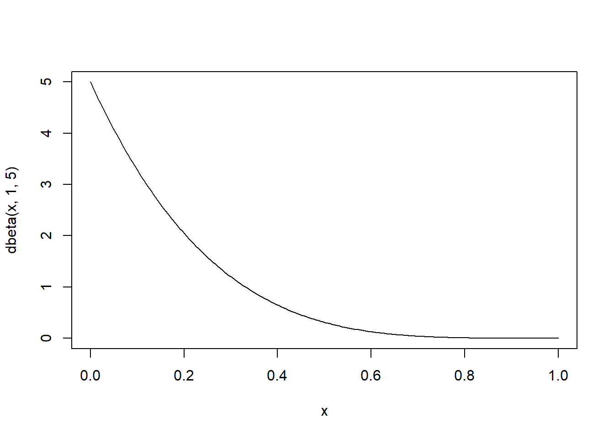
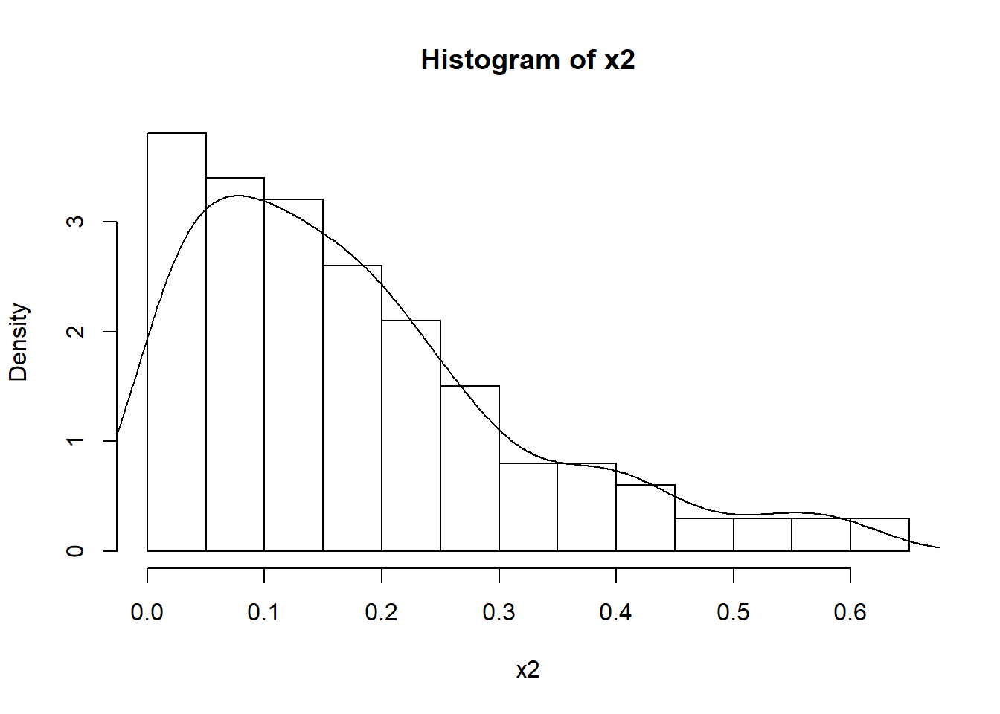

Chapter 11 Bayesian
The following is the part of the class note that I took from the online course of “Bayesian Statistics: From Concept to Data Analysis.” (https://www.coursera.org/learn/bayesian-statistics/home/welcome)
Important note: All the notes here are just for my own study purpose. I do not clain any copyright. You can use it for study purpose as well, but not for any business purposes.
11.1 Frequentist perspective
\[\theta = \{ fair , loaded \}\] \[x \sim Bin (5, \theta)\] \[\begin{aligned} f(x|\theta) &=\begin{cases} \binom{5}{x} (\frac{1}{2})^5 & if \; \theta=fair \\ \binom{5}{x} (0.7)^x(0.3)^{5-x} & if \; \theta=loaded \end{cases} \\ &= \binom{5}{x} (\frac{1}{2})^5 I_{\{\theta=fair \}}+\binom{5}{x} (0.7)^x(0.3)^{5-x}I_{\{\theta=loaded \}}\end{aligned}\]
When \(x=2\)
\[f(\theta | x=2)=\begin{cases} \binom{5}{x} (\frac{1}{2})^5 = 0.3125& if \; \theta=fair \\ \binom{5}{x} (0.7)^x(0.3)^{5-x} = 0.1323& if \; \theta=loaded \end{cases}\] Thus, based on MLE, it suggests that it should be “fair”, since it has a greater probablity if we observe 2 head out of 5 trials.
However, we can not know the following probability: given that we observe \(x=2\), what is the probability that \(\theta\) is fair?
\[P(\theta=fair | X=2)\] From the frequentist’s perspective, the coin is the fixed coin. And thus, the probablity of \(P(\theta=fair|x=2)\) is equal to \(P(\theta=fair)\).
\[P(\theta=fair|x=2)=P(\theta=fair)\] As,
\[P(\theta=fair) \in C(0,1) (i.e., either \; 0 \; or \; 1)\]
11.2 Bayesian perspective
Prior \(P(loaded)=0.6\)
\[\begin{aligned} f(\theta | X) &= \frac{f(x|\theta) f(\theta)}{\sum_{\theta} f(x|\theta)f(\theta)} \\ &=\frac{\binom{5}{x} [(\frac{1}{2})^5 \times 0.4 \times I_{\{\theta=fair \}}+ (0.7)^x(0.3)^{5-x} \times 0.6 \times I_{\{\theta=loaded \}}]}{\binom{5}{x} [(\frac{1}{2})^5 \times 0.4 + (0.7)^x(0.3)^{5-x} \times 0.6]} \end{aligned}\]
\[\begin{aligned} f(\theta |X=2) &=\frac{0.0125 I_{\{\theta=fair \}}+0.0079 I_{\{\theta=loaded \}} }{0.0125+0.0079} \\ &= 0.612 I_{\{\theta=fair \}} + 0.388 I_{\{\theta=loaded \}} \end{aligned}\]
Thus, we can say that:
\[P(\theta=loaded | X=2)=0.388\] We can change the prior, and get different posterior probabilities:
\[P(\theta=loaded)=\frac{1}{2} \rightarrow P(\theta=loaded | X=2)=0.297\] \[P(\theta=loaded)=\frac{9}{10} \rightarrow P(\theta=loaded | X=2)=0.792\]
11.3 Continous parameters
In the examples above, \(\theta\) is discrete. In contrast, the examples below use continous \(\theta\).
\[f(\theta |y)=\frac{f(y|\theta) f(\theta)}{f(y)}=\frac{f(y|\theta) f(\theta)}{\int f(y|\theta)f(\theta)d\theta}=\frac{likelihood \times prior}{normalizing-constant} \propto likelihood \times prior\]
Note that, the posterior is a PDF of \(\theta\), which is not in the function of \(f(y)\). Thus, removing the denominator (i.e., the normalizing constant) does not change the form of the posterior.
11.3.1 Uniform
Suppose that \(\theta\) is the probablity of a coin getting head. We could assign a uniform distribution.
\[\theta \sim U[0,1]\]
\[f(\theta)=I_{ \{0 \leqq \theta \leqslant 1 \}}\] (It is interesting to see how to write the pdf for uniform distribution.)
\[f(\theta | Y=1)= \frac{\theta^1(1-\theta)^0 I_{\{0 \leqq \theta \leqslant 1\}}}{\int_{-\infty}^{+\infty} \theta^1(1-\theta)^0 I_{\{0 \leqq \theta \leqslant 1\}} d\theta}=\frac{\theta I_{\{0 \leqq \theta \leqslant 1 \}}}{\int_0^1 \theta d\theta}=2\theta I_{ \{0 \leqq \theta \leqslant 1\}}\]
If we ignore the normalizing constant, we will get
\[f(\theta | Y=1) \propto \theta^1(1-\theta)^0 I_{ \{0 \leqq \theta \leqslant 1\} }=\theta I_{ \{0 \leqq \theta \leqslant 1\} }\]
Thus, we can see that with vs. without the noramlizing constant is the “2”.
11.3.2 Uniform: prior versus posterior
When \(\theta\) follows uniform distribution:
Prior
\[P(0.025 <\theta<0.975)=0.95\] \[P( 0.05< \theta )=0.95\] Posterior
\[P(0.025<\theta<0.975)=\int_{0.025}^{0.975} 2\theta d\theta=0.95\] \[P(0.05<\theta)=1-P(\theta <0.05)=\int_{0}^{0.05} 2\theta d\theta=1-0.05^2=0.9975\]
Thus, we can see that, while \(P(0.025<\theta<0.975)\) is the same for prior and posterior, \(P(0.05<\theta)\) is not the same.
11.3.3 Uniform: equal tailed versus HPD
Equal tailed
\[P(\theta < q|Y=1)=\int_0^q 2\theta d\theta=q^2\] \[P(\sqrt{0.025}<\theta<\sqrt{0.975}|Y=1)=P(0.158<\theta<0.987)=0.95\] We can say that: there’s a 95% probability that \(\theta\) is in between 0.158 and 0.987.
Highest Posterior Density
\[P(\theta > \sqrt{0.05}|Y=1)=P(\theta >0.224|Y=1)=0.95\]
11.4 Bernoulli/binomial likelihood with uniform prior
\[\begin{aligned} f(\theta | Y=1) &= \frac{\theta^{\sum y_i}(1-\theta)^{\sum n-y_i} I_{\{0 \leqq \theta \leqslant 1\}}}{\int_{-\infty}^{+\infty} \theta^{\sum y_i}(1-\theta)^{n-\sum y_i} I_{\{0 \leqq \theta \leqslant 1\}} d\theta} \\ &=\frac{\theta^{\sum y_i}(1-\theta)^{\sum n-y_i} I_{\{0 \leqq \theta \leqslant 1\}}}{\frac{\Gamma(\sum y_i+1)\Gamma(n-\sum y_i+1)}{\Gamma(n+2)} \int_{-\infty}^{+\infty} \frac{\Gamma(n+2)}{\Gamma(\sum y_i+1)\Gamma(n-\sum y_i+1)} \theta^{\sum y_i}(1-\theta)^{n-\sum y_i} I_{\{0 \leqq \theta \leqslant 1\}} d\theta} \\ &= \frac{\Gamma(n+2)}{\Gamma(\sum y_i+1)\Gamma(n-\sum y_i+1)}\theta^{\sum y_i}(1-\theta)^{\sum n-y_i} I_{\{0 \leqq \theta \leqslant 1\}} \end{aligned} \]
Thus,
\[\theta | y \sim Beta (\sum y_i+1, n-\sum y_i +1)\]
Side note: \(Beta(1,1)=Uniform(0,1)\):
\(Beta(\alpha,\beta)=\frac{x^{\alpha-1}(1-x)^{\beta-1}}{B(\alpha,\beta)} I_{\{0 \leqq x \leqslant 1\}}\)
Thus, we can get the following since the support for beta distribution is \([0,1]\):
\(Beta(1,1)=\frac{x^0(1-x)^0}{B(\alpha,\beta)}=1\times I_{\{0 \leqq x \leqslant 1\}}\)
11.5 Conjugate priors
As noted above, beta prior (or, Uniform) leads to beta posterior. In a more general sense, Beta prior always leads to beta posterior.
For instance,
\[\begin{aligned} f(\theta |y) \propto f(y|\theta)f(\theta)&=\theta^{\sum y_i}(1-\theta)^{\sum n-y_i}\frac{\theta^{\alpha-1}(1-\theta)^{\beta-1}}{B(\alpha,\beta)} I_{\{0 \leqq \theta \leqslant 1\}} \\ &=\frac{1}{B(\alpha, \beta)}\theta^{\sum y_i+\alpha-1}(1-\theta)^{\sum n-y_i+\beta-1} I_{\{0 \leqq \theta \leqslant 1\}} \\ &\propto \theta^{\sum y_i+\alpha-1}(1-\theta)^{\sum n-y_i+\beta-1} I_{\{0 \leqq \theta \leqslant 1\}} \end{aligned}\] Thus,
\[f(\theta |y) \sim Beta(\alpha+\sum y_i,\beta+\sum n-y_i)\] Conjugate prior: prior and posterior share the same distribution. As we can see, both the data and the prior contribute to the posterior.
For the prior of \(Beta(\alpha, \beta)\), the mean is
\[Mean_{prior}=\frac{\alpha}{\alpha+\beta}\]
Posterior mean is,
\[\begin{aligned} Mean_{posterior}&= \frac{\alpha+\sum y_i}{\alpha+\sum y_i+\beta+n-\sum y_i} \\ &=\frac{\alpha+\sum y_i}{\alpha+\beta+n} \\ &= \frac{\alpha+\beta}{\alpha+\beta+n}\frac{\alpha}{\alpha+\beta}+\frac{n}{\alpha+\beta+n}\frac{\sum y_i}{n} \\ &= Weight_{prior} \times Mean_{prior}+Weight_{data} \times Mean_{data}\end{aligned}\]
Side Note
- Binomial proportion confidence interval:
\[\hat{p} +/- 1.96 \sqrt{\frac{\hat{p}(1-\hat{p})}{n}}\] (2) Mean of Beta distribution:
\[\frac{\alpha}{\alpha+\beta}\] (3) Plot of Beta distribution
# Method 1
x<-seq(0,1,length=200)
plot(x,dbeta(x,1,5),type = "l")
# Method 2
x2<-rbeta(200,1,5)
hist(x2,prob = TRUE)
lines(density(x2))
11.6 Poisson distribution
Pmf of Poisson distribution:
\[Pois (\lambda) \sim \frac{\lambda^k e^{-\lambda}}{k!}\]
We can replace \(k\) with the notation of \(y\), and assume that we observe \(n\) \(y_i\): \[y_i \sim \frac{\lambda^{y_i} e^{-\lambda}}{y_i!}\]
\[f(y|\lambda)=\frac{\lambda^{\sum y_i} e^{- n \lambda}}{\prod_{i=1}^n y_i !}\]
We assume that \(\lambda\) follows Gamma distribution (i.e.,Gamma prior):
\[\lambda \sim \Gamma(\alpha, \beta)\] The pdf for Gamma distribution is:
\[\frac{\beta^{\alpha}}{\Gamma(\alpha)}x^{\alpha-1}e^{-\beta x}\]
Thus, the posterior is as follows:
\[\begin{aligned} f(\lambda | y) &\propto f(y|\lambda)f(\lambda) \\ &=\frac{\lambda^{\sum y_i} e^{- n \lambda}}{\prod_{i=1}^n y_i !} \times \frac{\beta^{\alpha}}{\Gamma(\alpha)}\lambda^{\alpha-1}e^{-\beta \lambda} \\ &\propto \lambda^{\sum y_i}e^{- n \lambda} \times \lambda^{\alpha-1}e^{-\beta \lambda} \\ &=\lambda^{(\alpha+\sum y_i)-1}e^{- (\beta+n) \lambda} \end{aligned}\] Thus, the posterior is:
\[\Gamma(\alpha + \sum y_i, \beta+n)\]
As we know that, the mean of prior for Gamma is \(\frac{\alpha}{\beta}\). Thus, we can get the mean for the posterior for Gamma is:
\[\begin{aligned} &=\frac{\alpha+\sum y_i}{\beta+n} \\ &= \frac{\beta}{\beta+n} \frac{\alpha}{\beta}+\frac{n}{\beta+n} \frac{\sum y_i}{n} \end{aligned}\] To determine the prior of \(\alpha\) and \(\beta\):
- Prior mean \(\frac{\alpha}{\beta}\)
- Prior std. dev. \(\frac{\sqrt \alpha}{\beta}\)
- Effective sample size \(\beta\)
- Vague prior Small \(\varepsilon >0\): \(\Gamma (\varepsilon,\varepsilon)\) . Thus, the posterior mean is primarily driven by the data:
\[\frac{\varepsilon + \sum y_i}{\varepsilon + n} \approx \frac{ \sum y_i}{n} \]
As we know, beta prior lead the Bernoulli trial to a beta posterior. That is, we know \(f(\theta|y)=\frac{f(y|\theta) f(\theta)}{f(y)}\). What is the prior predictive distribution of \(f(y)\)?
If Beta is Beta (3,3), what is the prior predictive probablity that we wil observe \(y=0\) in the next trial?
11.7 Exponential data
For instance, suppose that on average you need to wait for 10 minutes for a fast food delivery, and thus we can assume that \(y \sim Exp(\lambda)\). Furthermore, we assume that the prior \(\lambda\) follows Gamma distribution \(Gamma(\alpha, \beta)\), thus it is with a mean of \(\frac{\alpha}{\beta}=\frac{1}{10}\).
\[if \; \; \Gamma (100, 1000)\] (Note that, it has a mean of \(\frac{100}{1000}=\frac{1}{10}\)).
Thus, we can get:
\[\begin{aligned} f(\lambda | y) &\propto f(y|\lambda) f(\lambda) \\ &\propto \lambda e^{-\lambda y} \lambda^{\alpha-1}e^{-\beta \lambda} \\ &\propto \lambda^{(\alpha+1)-1} e^{-(\beta+y)\lambda } \end{aligned}\] Thus, we get
\[\lambda |y \sim \Gamma (\alpha+1,\beta+y)\] Thus, if we observe a data point that we need to wait for 12 minutes for a fast food delivery, we can update the posterior:
\[\lambda |y \sim \Gamma (101,1012)\] Thus, the mean for the posterior is
\[\frac{101}{1012}=\frac{1}{10.02}\]
Note:
Typically, we know that the pdf of Gamma is \(\frac{\beta^{\alpha}}{\Gamma(\alpha)}x^{\alpha-1}e^{-\beta x}\). We replace \(x\) with \(\lambda\) since now the random variable of \(x\) is to represent the parameter \(\lambda\) in the exponential distribution.
In the above, we drop the constant part (\(\frac{\beta^{\alpha}}{\Gamma(\alpha)}\)) in the Gamma distribution as long as it does not include \(x\) (i.e., \(\lambda\)).
Suppose that you have 4 observations in total, then
\[\begin{aligned} f(\lambda | y) &\propto f(y_1|\lambda)f(y_2|\lambda)f(y_3|\lambda)f(y_4|\lambda) f(\lambda) \\ &\propto \lambda e^{-\lambda y_1} \lambda e^{-\lambda y_2}\lambda e^{-\lambda y_3} \lambda e^{-\lambda y_4} \lambda^{\alpha-1}e^{-\beta \lambda} \\ &\propto \lambda^{(\alpha+4)-1} e^{-(\beta+\sum_{i=1}^4 y_i)\lambda } \end{aligned}\] Thus, the generalized form is as follows:
\[\lambda^{(\alpha+n)-1} e^{-(\beta+\sum_{i=1}^n y_i)\lambda }\]
11.8 Normal likelihood
11.8.1 When variance is known
\[x_i \sim N(\mu, \sigma_0^2)\] (\(\sigma_0\) is assumed to be known. Thus, the only unknown parameter is \(\mu\).)
The conjugate prior for normal distribution is normal distribution itself.
\[f(\mu |x) \sim f(x|\mu) f(\mu)\]
Assume that \[\mu \sim N(m_0,s_0^2)\]
\[\mu|x \sim N(\frac{\frac{n \bar{x}}{\sigma_o^2}+\frac{m_o}{S_0^2}}{\frac{n}{\sigma_0^2}+\frac{1}{s_0^2}},\frac{1}{\frac{n}{\sigma_0^2}+\frac{1}{s_0^2}})\]
Thus, where
\[\begin{aligned} \frac{\frac{n \bar{x}}{\sigma_o^2}+\frac{m_o}{S_0^2}}{\frac{n}{\sigma_0^2}+\frac{1}{s_0^2}}&=\frac{\frac{n \bar{x}}{\sigma_o^2}}{\frac{n}{\sigma_0^2}+\frac{1}{s_0^2}}+\frac{\frac{m_o}{S_0^2}}{\frac{n}{\sigma_0^2}+\frac{1}{s_0^2}}\\ &=\frac{n}{n+\frac{\sigma_0^2}{s_0^2}} \bar{x}+\frac{\frac{\sigma_0^2}{S_0^2}}{n+\frac{\sigma_0^2}{s_0^2}}m_o \end{aligned}\] Note:
As we can see, the posterior mean is a weighted mean – a combination of prior mean and sample mean.
When n is larger, the sample mean \(\bar{x}\) gets more weight.
For the prior mean \(m_0\), the smaller the prior variance \(s_0^2\) is, the prior mean gets more weight. If the prior variance \(s_0^2\) is big, the prior mean will get less weight in the final posterior mean.
11.8.2 When variance is unknown
\[x_i | \mu, \sigma^2 \sim N (\mu, \sigma^2)\]
\[\mu | \sigma^2 \sim N(m, \frac{\sigma^2}{w})\]
Side note：
\(w=\frac{\sigma^2}{\sigma_{\mu}^2}\) effective sample size
\[\sigma^2 \sim \Gamma^{-1}(\alpha, \beta)\]
Thus, we can get that,
\[\sigma^2 | x\sim \Gamma^{-1}(\alpha+\frac{n}{2}, \beta+\frac{1}{2} \sum_{i=1}^{n}(x_i-\bar{x})^2+\frac{nw}{2(n+w)}(\bar{x}-m)^2)\]
\[\mu| \sigma^2,x \sim N(\frac{n \bar{x}+wm}{n+w},\frac{\sigma^2}{n+w})\]
Where,
\(\frac{n \bar{x}+wm}{n+w} = \frac{w}{n+w}m+\frac{n}{n+w}\bar{x}\)
\[\mu |x \sim t - distribution \]
11.9 Non-informative priors
11.9.1 Bernoulli
\(Y_i \sim B(\theta)\)
\[\theta \sim U[0,1]= Beta (1,1)\] (Effective sample size is 1+1=2)
If we get \(Beta(\frac{1}{2},\frac{1}{2})\) and \(Beta(0.001, 0.001)\) have less impact on the posterior.
Improper prior, for instance, THe prior \[Beta (0,0)\] \[f(\theta) \propto \theta ^{-1}(1-\theta)^{-1}\]
In this case,
\[f(\theta| y) \propto \theta^{y-1}(1-\theta)^{n-y-1} \sim Beta(y, n-y)\]
Posterior mean: \(\frac{y}{n}=\hat{\theta}\)
11.9.2 Gaussian
\[Y_i \sim N(\mu, \sigma^2)\]
Vague prior:
\[\mu \sim N(0, 1000000^2)\] or,
\[f(\mu) \sim 1\]
\[\begin{aligned} f(\mu | y) &\propto f(y|\mu)f(\mu) \\ &\propto exp(-\frac{1}{2 \sigma^2} \sum (y_i-\mu)^2) \times 1 \\ &\propto exp(-\frac{1}{2 \frac{\sigma^2}{n}} \sum (y_i-\bar{y})^2) \end{aligned}\]
Thus,
\[\mu | y \sim N(\bar{y}, \frac{\sigma^2}{n})\]
This is exactly the same as the esitimate from MLE estimate.
NOTE
In case that the variance is unknown,
\[f(\sigma^2) \propto \frac{1}{\sigma^2}\]
This is equivalent to the following:
\[\Gamma ^{-1}(0,1)\] Thus the posteiro for \(\sigma^2\)
\[\sigma^2|y \sim \Gamma ^{-1} (\frac{n-1}{2},\frac{1}{2} \sum (y_i-\bar{y})^2)\]
11.10 Jeffreys Prior
Jeffreys Prior
\[f(\theta) \propto \sqrt{I(\theta)}\] For instance,
11.10.1 Gaussian
\[Y_i \sim (\mu, \sigma^2) \rightarrow f(\mu) \propto 1, f(\sigma^2)\propto \frac{1}{\sigma^2}\]
11.10.2 Bernoulli
\[Y_i \sim B(\theta) \rightarrow f(\theta) \propto \theta ^{-\frac{1}{2}}(1-\theta)^{-\frac{1}{2}}\sim Beta(\frac{1}{2},\frac{1}{2})\]